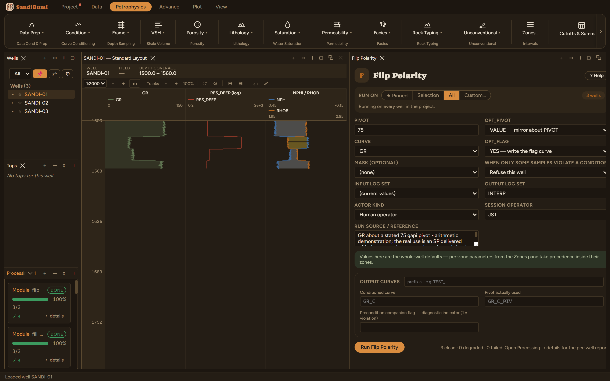

Flip Polarity
Mirrors a curve about a pivot: for an SP recorded with the wrong sign convention, or any reading delivered inverted.
OUT = 2·pivot − CURVE pivot: a given VALUE, or this well's own MIDRANGE or MEAN
What this is and when to reach for it
Flip Polarity mirrors a curve about a pivot: OUT = 2 × pivot − CURVE. The canonical customer is an SP delivered with the wrong sign convention, mirrored about its shale baseline; more generally, any reading a vendor recorded inverted. It is a one-line arithmetic fix, and the interesting part is entirely in where the pivot comes from.
The physics
Mirroring preserves shape and spacing exactly; only direction reverses. The three pivot sources make three different statements:
- VALUE: mirror about a number you give. The only reproducible choice, and the one to use when the pivot is a physical reference, such as an SP shale baseline.
- MIDRANGE: mirror about (min + max) / 2 of the well's own curve.
- MEAN: mirror about the well's own mean.
MIDRANGE and MEAN are computed per well, so the same run gives each well a different pivot, and two wells' flipped curves are no longer on a common scale. Sometimes that is exactly what you want for a shape-only display; never for anything quantitative.
The picks and why
- VALUE pivot 75, demonstrated on the gamma ray (this dataset has no SP, and the arithmetic does not care). Run live: GR spanning 40.21 to 115.60 gAPI flips to 34.40 to 109.79, and the checks are exact: 2 × 75 − 115.60 = 34.40 and 2 × 75 − 40.21 = 109.79.
- What changes under MIDRANGE, run live: the module's pivot-record output shows each well flipped about its own number, 78.305, 78.365 and 77.335 for the three wells. One option, three different transforms, and the record curve is how you would ever know.
Step by step
- Open Petrophysics ▸ Condition ▸ Flip Polarity.
- Select the curve, choose the pivot source, and state the pivot when using VALUE.
- Fill the custody line and press Run Flip Polarity.

Reading the result
3 clean. The output curve mirrors exactly, and the companion curve records the pivot actually used at every sample, which under VALUE is your number everywhere and under MIDRANGE or MEAN is each well's own. Verify the mirroring in the Database Inspector:
SELECT round(MIN(value), 2), round(MAX(value), 2) FROM computed_curves WHERE curve_name = 'GR_C' AND NOT isnan(value)

QC and pitfalls
- For SP work, pick the shale baseline off the log and enter it as a VALUE pivot. A per-well automatic pivot moves with every reprocessing of the curve, and a baseline that moves is not a baseline.
- After any multi-well flip with MIDRANGE or MEAN, read the pivot-record curve before comparing wells; the record is the only place the per-well scale difference is visible.
- Flipping is not calibration. A curve that is inverted and also shifted needs the flip here and the shift addressed on its own terms, not one pivot chosen to fake both.
What the application enforces
Everything below is generated from the same manifest the application builds this module’s pane from — descriptions, defaults, sources, ranges and pre-run checks here are exactly what the running application enforces.
Mirrors a curve about a pivot: OUT = 2 x pivot - CURVE. For an SP recorded with the wrong sign convention, or any reading delivered inverted. PIVOT_FROM: • VALUE — mirror about PIVOT, a number you give. The only reproducible choice, and the one to use when the pivot is a physical reference (an SP shale baseline). • MIDRANGE — mirror about (min + max) / 2 of this well's own curve. • MEAN — mirror about this well's own mean. MIDRANGE and MEAN are computed PER WELL, so the same run gives each well a different pivot and two wells' flipped curves are no longer on a common scale. That is often what is wanted for a quick look and is almost never what should go into a correlation — the run leaves the pivot it used in the flag curve so it is at least recoverable.
Input curves
| Role | Description | Resolves to | Required | Notes |
|---|---|---|---|---|
| CURVE | Curve to flip | SP | yes | — |
Parameters
Whole-well defaults; per-zone values from the Zones pane take precedence inside their zones (except where a parameter is marked one-value-per-well).
PIVOT
Value to mirror about (PIVOT_FROM = VALUE)
- No shipped default. You supply this value, and a run entering it explicitly must also cite the source that covers it.
- Accepted range: -1000000000 to 1000000000
Options
OPT_PIVOT
Where the mirror line sits
- Choices:
VALUE— mirror about PIVOTMIDRANGE— about (min + max) / 2 of this well's curveMEAN— about this well's own mean
- Default:
VALUE
OPT_FLAG
Write a curve carrying the pivot actually used
- Choices:
YES— write the flag curveNO— the conditioned curve only
- Default:
YES
Output curves
| Name | Description |
|---|---|
| OUT_CURVE | Conditioned curve |
| OUT_FLAG | Pivot actually used |